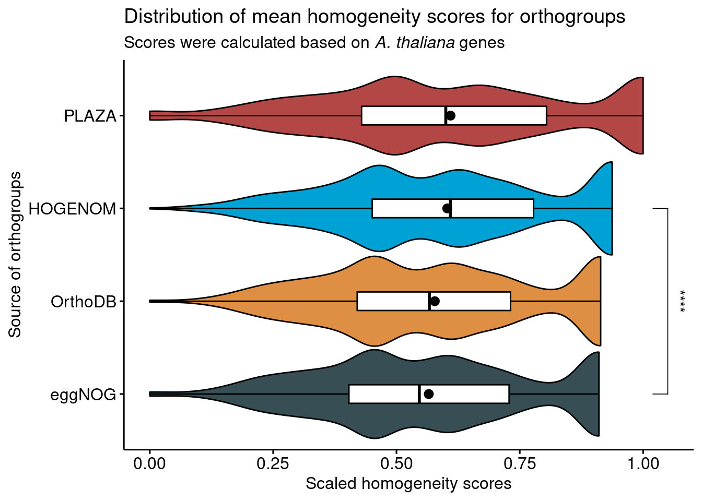

library(cogeqc)
library(here)
library(tidyverse)
library(ggpubr)
set.seed(123) # for reproducibility
source(here("code", "utils.R"))3 Assessing orthogroup inference in public databases
Here, we will use the protein domain-based approach in cogeqc to assess gene families from different sources, namely:
- PLAZA Dicots 5.0 (Van Bel et al. 2022)
- OrthoDB (Kuznetsov et al. 2023)
- eggNOG (Hernandez-Plaza et al. 2023)
- HOGENOM (Penel et al. 2009)
3.1 Calculating orthogroup scores
To make comparison possible, we will Arabidopsis thaliana domain annotation as a proxy, as this species is present in all of the aforementioned databases. For that, we will use the function calculate_H() from cogeqc.
Orthogroups assignments from OrthoDB, eggNOG, InParanoid, PhylomeDB, and HOGENOM will be obtained from UniProt.
3.1.1 PLAZA Dicots 5.0
Below, we will obtain orthogroups and A. thaliana’s domain annotation from PLAZA 5.0, and then we will calculate homogeneity scores for each orthogroup.
# Obtain gene families from PLAZA
fams_plaza <- readr::read_tsv(
paste0(
"https://ftp.psb.ugent.be/pub/plaza/plaza_public_dicots_05/",
"GeneFamilies/genefamily_data.HOMFAM.csv.gz"
), show_col_types = FALSE, skip = 2
) %>%
filter(species == "ath") %>%
as.data.frame()
names(fams_plaza) <- c("Orthogroup", "Species", "Gene")
head(fams_plaza) Orthogroup Species Gene
1 HOM05D000001 ath AT1G02310
2 HOM05D000001 ath AT1G03510
3 HOM05D000001 ath AT1G03540
4 HOM05D000001 ath AT1G04020
5 HOM05D000001 ath AT1G04840
6 HOM05D000001 ath AT1G05750# Obtain domain anotation for A. thaliana
ath_interpro <- readr::read_tsv(
paste0(
"https://ftp.psb.ugent.be/pub/plaza/plaza_public_dicots_05/",
"InterPro/interpro.ath.csv.gz"
), show_col_types = FALSE, skip = 8
) %>%
select(1,3)
names(ath_interpro) <- c("Gene", "Annotation")
head(ath_interpro)# A tibble: 6 × 2
Gene Annotation
<chr> <chr>
1 AT1G01010 IPR036093
2 AT1G01010 IPR003441
3 AT1G01010 IPR036093
4 AT1G01020 IPR007290
5 AT1G01020 IPR007290
6 AT1G01030 IPR003340 # Combining everything and calculating homogeneity scores
fam_df_plaza <- merge(fams_plaza, ath_interpro)
head(fam_df_plaza) Gene Orthogroup Species Annotation
1 AT1G01010 HOM05D000010 ath IPR036093
2 AT1G01010 HOM05D000010 ath IPR003441
3 AT1G01010 HOM05D000010 ath IPR036093
4 AT1G01020 HOM05D006082 ath IPR007290
5 AT1G01020 HOM05D006082 ath IPR007290
6 AT1G01030 HOM05D000466 ath IPR015300H_summary <- function(ortho_df = NULL) {
H <- calculate_H(ortho_df)
mean_H <- round(mean(H$Score), 2)
median_H <- round(median(H$Score), 2)
result_list <- list(H = H, mean_score = mean_H, median_score = median_H)
return(result_list)
}
H_plaza <- H_summary(fam_df_plaza)
head(H_plaza$H) Orthogroup Score
1 HOM05D000001 283.3132
2 HOM05D000002 129.9598
3 HOM05D000003 889.1268
4 HOM05D000004 0.0000
5 HOM05D000005 1135.8799
6 HOM05D000006 2820.83373.1.2 OrthoDB, eggNOG, and HOGENOM
Orthogroup assignments from these databases will be obtained from UniProt (Consortium 2021).
# Get list of proteins - from primary transcripts only
ath_proteome <- Biostrings::readAAStringSet(
paste0(
"https://ftp.uniprot.org/pub/databases/uniprot/",
"current_release/knowledgebase/reference_proteomes/Eukaryota/",
"UP000006548/UP000006548_3702.fasta.gz"
)
)
ath_proteins <- names(ath_proteome)
ath_proteins <- sapply(strsplit(ath_proteins, split = "\\|"), `[`, 2)
# Extract phylogenomic information for all genes
source(here::here("code", "utils.R"))
fams_uniprot <- extract_ogs_uniprot(ath_proteins)
fams_orthodb <- fams_uniprot[, c("Gene", "OrthoDB")] %>% drop_na()
fams_eggnog <- fams_uniprot[, c("Gene", "eggNOG")] %>% drop_na()
fams_hogenom <- fams_uniprot[, c("Gene", "HOGENOM")] %>% drop_na()
#----Calculate homogeneity scores for each database-----------------------------
# OrthoDB
fams_df_orthodb <- merge(fams_orthodb, ath_interpro)
names(fams_df_orthodb)[2] <- "Orthogroup"
H_orthodb <- H_summary(fams_df_orthodb)
# eggNOG
fams_df_eggnog <- merge(fams_eggnog, ath_interpro)
names(fams_df_eggnog)[2] <- "Orthogroup"
H_eggnog <- H_summary(fams_df_eggnog)
# HOGENOM
fams_df_hogenom <- merge(fams_hogenom, ath_interpro)
names(fams_df_hogenom)[2] <- "Orthogroup"
H_hogenom <- H_summary(fams_df_hogenom)3.2 Comparing homogeneity scores
Finally, let’s compare homogeneity scores and visualize their distributions. First, let’s combine all data frames of homogeneity scores into a single data frame.
H_combined <- bind_rows(
H_plaza$H %>% mutate(Source = "PLAZA"),
H_orthodb$H %>% mutate(Source = "OrthoDB"),
H_eggnog$H %>% mutate(Source = "eggNOG"),
H_hogenom$H %>% mutate(Source = "HOGENOM")
)
save(
H_combined,
file = here::here("products", "result_files", "H_combined.rda"),
compress = "xz"
)Now, let’s compare the distributions of homogeneity scores for each database to see if there are any differences. For that, we will calculate P-values from a Wilcoxon test with Wicoxon effect sizes (r). The Wilcoxon effect size is calculated as the Z statistic divided by the square root of the sample size.
# Scale scores to maximum, so that they range from 0 to 1
H_combined$Score <- H_combined$Score / max(H_combined$Score)
head(H_combined) Orthogroup Score Source
1 HOM05D000001 0.10043599 PLAZA
2 HOM05D000002 0.04607143 PLAZA
3 HOM05D000003 0.31520000 PLAZA
4 HOM05D000004 0.00000000 PLAZA
5 HOM05D000005 0.40267523 PLAZA
6 HOM05D000006 1.00000000 PLAZA# Quick exploration of means and medians
H_combined %>%
group_by(Source) %>%
summarise(mean = mean(Score), median = median(Score))# A tibble: 4 × 3
Source mean median
<chr> <dbl> <dbl>
1 HOGENOM 0.603 0.609
2 OrthoDB 0.578 0.567
3 PLAZA 0.610 0.6
4 eggNOG 0.565 0.546# Compare homogeneity scores - all vs all
db_wilcox <- compare(H_combined, "Score ~ Source")
db_wilcox |>
filter_comparison() |>
knitr::kable(
caption = "Mann-Whitney U test for differences in orthogroup scores with Wilcoxon effect sizes.",
digits = 10
)| group1 | group2 | n1 | n2 | padj | effsize | magnitude |
|---|---|---|---|---|---|---|
| eggNOG | HOGENOM | 3092 | 3257 | 0.0e+00 | 0.11102956 | small |
| eggNOG | OrthoDB | 3092 | 3201 | 8.5e-09 | 0.07197679 | small |
| eggNOG | PLAZA | 3092 | 3503 | 0.0e+00 | 0.09434683 | small |
| HOGENOM | OrthoDB | 3257 | 3201 | 0.0e+00 | 0.09071787 | small |
| HOGENOM | PLAZA | 3257 | 3503 | 3.0e-03 | 0.03402611 | small |
| OrthoDB | PLAZA | 3201 | 3503 | 7.0e-10 | 0.07526911 | small |
We can see that there are diffences in mean. In summary:
eggNOG orthogroups have lower scores than every other source
HOGENOM orthogroups have higher scores than OrthoDB, but lower than PLAZA.
PLAZA orthogroup scores are higher than every other database.
However, the effect sizes are very small, suggesting that significant differences could be due to large sample sizes, as P-values are highly affected by sample sizes.
Now, let’s visualize the distributions with significant differences highlighted. Here, we will only display comparison bars for comparisons with P < 0.05 and effect sizes > 0.1.
# Comparisons to be made
comps <- list(
c("HOGENOM", "eggNOG")
)
# Change order of levels according to comparison results
H_combined$Source <- factor(
H_combined$Source, levels = rev(c(
"PLAZA", "HOGENOM", "OrthoDB", "eggNOG"
))
)
# Visualize distributions with significant differences highlighted
distros <- ggviolin(
H_combined, y = "Score", x = "Source",
orientation = "horiz", trim = TRUE, add = c("boxplot", "mean"),
fill = "Source", add.params = list(fill = "white"), palette = "jama"
) +
ggpubr::stat_compare_means(
comparisons = comps,
label = "p.signif",
method = "wilcox.test"
) +
theme(legend.position = "none") +
labs(y = "Scaled homogeneity scores", x = "Source of orthogroups",
title = "Distribution of mean homogeneity scores for orthogroups",
subtitle = "Scores were calculated based on *A. thaliana* genes") +
theme(plot.subtitle = ggtext::element_markdown())
distros
To conclude, despite some significant differences, all databases perform equally well in their orthogroup definition. The observed differences in means could be due to large sample sizes, as indicated by very low effect sizes, and to the different species composition of the database.
Session info
This document was created under the following conditions:
─ Session info ───────────────────────────────────────────────────────────────
setting value
version R version 4.3.0 (2023-04-21)
os Ubuntu 20.04.5 LTS
system x86_64, linux-gnu
ui X11
language (EN)
collate en_US.UTF-8
ctype en_US.UTF-8
tz Europe/Brussels
date 2023-08-07
pandoc 3.1.1 @ /usr/lib/rstudio/resources/app/bin/quarto/bin/tools/ (via rmarkdown)
─ Packages ───────────────────────────────────────────────────────────────────
package * version date (UTC) lib source
abind 1.4-5 2016-07-21 [1] CRAN (R 4.3.0)
ape 5.7-1 2023-03-13 [1] CRAN (R 4.3.0)
aplot 0.1.10 2023-03-08 [1] CRAN (R 4.3.0)
backports 1.4.1 2021-12-13 [1] CRAN (R 4.3.0)
beeswarm 0.4.0 2021-06-01 [1] CRAN (R 4.3.0)
BiocGenerics 0.46.0 2023-04-25 [1] Bioconductor
BiocManager 1.30.21.1 2023-07-18 [1] CRAN (R 4.3.0)
BiocStyle 2.29.1 2023-08-04 [1] Github (Bioconductor/BiocStyle@7c0e093)
Biostrings 2.68.0 2023-04-25 [1] Bioconductor
bit 4.0.5 2022-11-15 [1] CRAN (R 4.3.0)
bit64 4.0.5 2020-08-30 [1] CRAN (R 4.3.0)
bitops 1.0-7 2021-04-24 [1] CRAN (R 4.3.0)
broom 1.0.4 2023-03-11 [1] CRAN (R 4.3.0)
car 3.1-2 2023-03-30 [1] CRAN (R 4.3.0)
carData 3.0-5 2022-01-06 [1] CRAN (R 4.3.0)
cli 3.6.1 2023-03-23 [1] CRAN (R 4.3.0)
codetools 0.2-19 2023-02-01 [4] CRAN (R 4.2.2)
cogeqc * 1.4.0 2023-04-25 [1] Bioconductor
coin 1.4-2 2021-10-08 [1] CRAN (R 4.3.0)
colorspace 2.1-0 2023-01-23 [1] CRAN (R 4.3.0)
commonmark 1.9.0 2023-03-17 [1] CRAN (R 4.3.0)
crayon 1.5.2 2022-09-29 [1] CRAN (R 4.3.0)
curl 5.0.0 2023-01-12 [1] CRAN (R 4.3.0)
digest 0.6.33 2023-07-07 [1] CRAN (R 4.3.0)
dplyr * 1.1.2 2023-04-20 [1] CRAN (R 4.3.0)
evaluate 0.21 2023-05-05 [1] CRAN (R 4.3.0)
fansi 1.0.4 2023-01-22 [1] CRAN (R 4.3.0)
farver 2.1.1 2022-07-06 [1] CRAN (R 4.3.0)
fastmap 1.1.1 2023-02-24 [1] CRAN (R 4.3.0)
forcats * 1.0.0 2023-01-29 [1] CRAN (R 4.3.0)
generics 0.1.3 2022-07-05 [1] CRAN (R 4.3.0)
GenomeInfoDb 1.36.0 2023-04-25 [1] Bioconductor
GenomeInfoDbData 1.2.10 2023-04-28 [1] Bioconductor
ggbeeswarm 0.7.2 2023-04-29 [1] CRAN (R 4.3.0)
ggfun 0.0.9 2022-11-21 [1] CRAN (R 4.3.0)
ggplot2 * 3.4.1 2023-02-10 [1] CRAN (R 4.3.0)
ggplotify 0.1.0 2021-09-02 [1] CRAN (R 4.3.0)
ggpubr * 0.6.0 2023-02-10 [1] CRAN (R 4.3.0)
ggsci 3.0.0 2023-03-08 [1] CRAN (R 4.3.0)
ggsignif 0.6.4 2022-10-13 [1] CRAN (R 4.3.0)
ggtext 0.1.2 2022-09-16 [1] CRAN (R 4.3.0)
ggtree 3.8.0 2023-04-25 [1] Bioconductor
glue 1.6.2 2022-02-24 [1] CRAN (R 4.3.0)
gridGraphics 0.5-1 2020-12-13 [1] CRAN (R 4.3.0)
gridtext 0.1.5 2022-09-16 [1] CRAN (R 4.3.0)
gtable 0.3.3 2023-03-21 [1] CRAN (R 4.3.0)
here * 1.0.1 2020-12-13 [1] CRAN (R 4.3.0)
hms 1.1.3 2023-03-21 [1] CRAN (R 4.3.0)
htmltools 0.5.5 2023-03-23 [1] CRAN (R 4.3.0)
htmlwidgets 1.6.2 2023-03-17 [1] CRAN (R 4.3.0)
igraph 1.4.2 2023-04-07 [1] CRAN (R 4.3.0)
IRanges 2.34.0 2023-04-25 [1] Bioconductor
jsonlite 1.8.7 2023-06-29 [1] CRAN (R 4.3.0)
knitr 1.43 2023-05-25 [1] CRAN (R 4.3.0)
labeling 0.4.2 2020-10-20 [1] CRAN (R 4.3.0)
lattice 0.20-45 2021-09-22 [4] CRAN (R 4.2.0)
lazyeval 0.2.2 2019-03-15 [1] CRAN (R 4.3.0)
libcoin 1.0-9 2021-09-27 [1] CRAN (R 4.3.0)
lifecycle 1.0.3 2022-10-07 [1] CRAN (R 4.3.0)
lubridate * 1.9.2 2023-02-10 [1] CRAN (R 4.3.0)
magrittr 2.0.3 2022-03-30 [1] CRAN (R 4.3.0)
markdown 1.6 2023-04-07 [1] CRAN (R 4.3.0)
MASS 7.3-58.2 2023-01-23 [4] CRAN (R 4.2.2)
Matrix 1.5-1 2022-09-13 [4] CRAN (R 4.2.1)
matrixStats 1.0.0 2023-06-02 [1] CRAN (R 4.3.0)
modeltools 0.2-23 2020-03-05 [1] CRAN (R 4.3.0)
multcomp 1.4-25 2023-06-20 [1] CRAN (R 4.3.0)
munsell 0.5.0 2018-06-12 [1] CRAN (R 4.3.0)
mvtnorm 1.1-3 2021-10-08 [1] CRAN (R 4.3.0)
nlme 3.1-162 2023-01-31 [4] CRAN (R 4.2.2)
patchwork 1.1.2 2022-08-19 [1] CRAN (R 4.3.0)
pillar 1.9.0 2023-03-22 [1] CRAN (R 4.3.0)
pkgconfig 2.0.3 2019-09-22 [1] CRAN (R 4.3.0)
plyr 1.8.8 2022-11-11 [1] CRAN (R 4.3.0)
purrr * 1.0.1 2023-01-10 [1] CRAN (R 4.3.0)
R6 2.5.1 2021-08-19 [1] CRAN (R 4.3.0)
Rcpp 1.0.10 2023-01-22 [1] CRAN (R 4.3.0)
RCurl 1.98-1.12 2023-03-27 [1] CRAN (R 4.3.0)
readr * 2.1.4 2023-02-10 [1] CRAN (R 4.3.0)
reshape2 1.4.4 2020-04-09 [1] CRAN (R 4.3.0)
rlang 1.1.1 2023-04-28 [1] CRAN (R 4.3.0)
rmarkdown 2.23 2023-07-01 [1] CRAN (R 4.3.0)
rprojroot 2.0.3 2022-04-02 [1] CRAN (R 4.3.0)
rstatix 0.7.2 2023-02-01 [1] CRAN (R 4.3.0)
rstudioapi 0.14 2022-08-22 [1] CRAN (R 4.3.0)
S4Vectors 0.38.0 2023-04-25 [1] Bioconductor
sandwich 3.0-2 2022-06-15 [1] CRAN (R 4.3.0)
scales 1.2.1 2022-08-20 [1] CRAN (R 4.3.0)
sessioninfo 1.2.2 2021-12-06 [1] CRAN (R 4.3.0)
stringi 1.7.12 2023-01-11 [1] CRAN (R 4.3.0)
stringr * 1.5.0 2022-12-02 [1] CRAN (R 4.3.0)
survival 3.5-3 2023-02-12 [4] CRAN (R 4.2.2)
TH.data 1.1-2 2023-04-17 [1] CRAN (R 4.3.0)
tibble * 3.2.1 2023-03-20 [1] CRAN (R 4.3.0)
tidyr * 1.3.0 2023-01-24 [1] CRAN (R 4.3.0)
tidyselect 1.2.0 2022-10-10 [1] CRAN (R 4.3.0)
tidytree 0.4.2 2022-12-18 [1] CRAN (R 4.3.0)
tidyverse * 2.0.0 2023-02-22 [1] CRAN (R 4.3.0)
timechange 0.2.0 2023-01-11 [1] CRAN (R 4.3.0)
treeio 1.24.1 2023-05-31 [1] Bioconductor
tzdb 0.3.0 2022-03-28 [1] CRAN (R 4.3.0)
utf8 1.2.3 2023-01-31 [1] CRAN (R 4.3.0)
vctrs 0.6.3 2023-06-14 [1] CRAN (R 4.3.0)
vipor 0.4.5 2017-03-22 [1] CRAN (R 4.3.0)
vroom 1.6.3 2023-04-28 [1] CRAN (R 4.3.0)
withr 2.5.0 2022-03-03 [1] CRAN (R 4.3.0)
xfun 0.39 2023-04-20 [1] CRAN (R 4.3.0)
xml2 1.3.4 2023-04-27 [1] CRAN (R 4.3.0)
XVector 0.40.0 2023-04-25 [1] Bioconductor
yaml 2.3.7 2023-01-23 [1] CRAN (R 4.3.0)
yulab.utils 0.0.6 2022-12-20 [1] CRAN (R 4.3.0)
zlibbioc 1.46.0 2023-04-25 [1] Bioconductor
zoo 1.8-12 2023-04-13 [1] CRAN (R 4.3.0)
[1] /home/faalm/R/x86_64-pc-linux-gnu-library/4.3
[2] /usr/local/lib/R/site-library
[3] /usr/lib/R/site-library
[4] /usr/lib/R/library
──────────────────────────────────────────────────────────────────────────────References
Consortium, The UniProt. 2021. “UniProt: The Universal Protein Knowledgebase in 2021.” Nucleic Acids Research 49 (D1): D480–89.
Hernandez-Plaza, Ana, Damian Szklarczyk, Jorge Botas, Carlos P Cantalapiedra, Joaquin Giner-Lamia, Daniel R Mende, Rebecca Kirsch, et al. 2023. “eggNOG 6.0: Enabling Comparative Genomics Across 12 535 Organisms.” Nucleic Acids Research 51 (D1): D389–94.
Kuznetsov, Dmitry, Fredrik Tegenfeldt, Mose Manni, Mathieu Seppey, Matthew Berkeley, Evgenia V Kriventseva, and Evgeny M Zdobnov. 2023. “OrthoDB V11: Annotation of Orthologs in the Widest Sampling of Organismal Diversity.” Nucleic Acids Research 51 (D1): D445–51.
Penel, Simon, Anne-Muriel Arigon, Jean-François Dufayard, Anne-Sophie Sertier, Vincent Daubin, Laurent Duret, Manolo Gouy, and Guy Perrière. 2009. “Databases of Homologous Gene Families for Comparative Genomics.” In BMC Bioinformatics, 10:1–13. 6. BioMed Central.
Van Bel, Michiel, Francesca Silvestri, Eric M Weitz, Lukasz Kreft, Alexander Botzki, Frederik Coppens, and Klaas Vandepoele. 2022. “PLAZA 5.0: Extending the Scope and Power of Comparative and Functional Genomics in Plants.” Nucleic Acids Research 50 (D1): D1468–74.